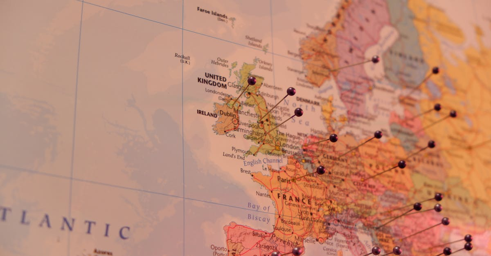

L'Ascension Inattendue de la Raffinerie Dangote
Dans un paysage énergétique mondial en constante mutation, marqué par des tensions géopolitiques et des perturbations des chaînes d'approvisionnement, un acteur africain émerge avec une force surprenante : la méga-raffinerie de Dangote. Propriété d'Aliko Dangote, l'homme le plus riche d'Afrique, cette installation industrielle colossale, située au Nigeria, est devenue une source de plus en plus vitale de kérosène aviation pour l'Europe. Cette évolution intervient alors que les marchés sont sous pression, notamment en raison des répercussions de la guerre en Iran, qui a perturbé les flux traditionnels de produits pétroliers. La raffinerie Dangote, autrefois perçue comme un projet ambitieux visant à satisfaire la demande intérieure nigériane et régionale, se retrouve désormais au cœur des flux d'approvisionnement internationaux. Elle joue un rôle clé dans le comblement d'un déficit créé par ces événements mondiaux, démontrant la résilience et l'adaptabilité des infrastructures stratégiques. L'importance croissante de cette raffinerie pour le marché européen n'est pas seulement une question de volume ; elle souligne également la diversification nécessaire des sources d'approvisionnement pour les pays consommateurs. Pour les investisseurs, cette situation représente un cas d'étude fascinant sur la manière dont les dynamiques géopolitiques peuvent remodeler les marchés et créer de nouvelles opportunités, tout en soulevant des questions sur la volatilité future et la sécurité énergétique. L'optimisation des flux logistiques et la capacité à répondre rapidement aux demandes urgentes sont désormais des atouts majeurs, positionnant la raffinerie Dangote comme un acteur incontournable.
Impact des Tensions Géopolitiques sur le Marché du Kérosène
La guerre en Iran a eu un effet domino dévastateur sur les marchés énergétiques mondiaux, et le secteur du kérosène aviation n'a pas été épargné. Les sanctions internationales, les perturbations des routes maritimes et l'incertitude politique ont considérablement réduit l'offre disponible sur les marchés traditionnels. L'Europe, fortement dépendante de ces approvisionnements, s'est retrouvée dans une position vulnérable, cherchant activement des alternatives pour maintenir ses opérations aériennes. C'est dans ce contexte que la raffinerie Dangote prend toute son ampleur. Sa capacité de production significative et sa localisation stratégique lui permettent de proposer une offre compétitive et fiable. L'augmentation des exportations de kérosène vers l'Europe n'est pas qu'une simple transaction commerciale ; elle reflète une réorganisation profonde des chaînes d'approvisionnement mondiales. Les compagnies aériennes et les distributeurs européens sont contraints de revoir leurs stratégies d'approvisionnement, privilégiant désormais des partenaires capables de garantir la continuité des livraisons. Cette situation met en lumière la volatilité inhérente aux marchés des matières premières et l'importance cruciale de la diversification géographique des sources. Pour les investisseurs avisés, comprendre ces dynamiques est essentiel. Cela implique de surveiller non seulement les prix du baril de pétrole brut, mais aussi les flux de produits raffinés, les capacités de production des nouvelles installations et l'évolution des relations géopolitiques. L'émergence de nouveaux acteurs comme la raffinerie Dangote peut offrir des opportunités de rendement intéressantes, mais elle exige également une analyse rigoureuse des risques associés. La capacité à anticiper ces changements et à ajuster rapidement les stratégies d'investissement est primordiale dans un environnement aussi dynamique.
La Raffinerie Dangote : Un Modèle d'Investissement Stratégique
La construction et l'exploitation de la méga-raffinerie de Dangote représentent un pari audacieux et un investissement colossal, estimé à plusieurs milliards de dollars. Ce projet, porté par la vision d'Aliko Dangote, visait initialement à réduire la dépendance du Nigeria aux importations de produits pétroliers raffinés et à créer de la valeur ajoutée localement. Cependant, les circonstances géopolitiques actuelles ont transformé cette initiative en un atout stratégique majeur sur la scène internationale. La capacité de la raffinerie à produire du kérosène d'aviation de haute qualité, répondant aux normes européennes, est un témoignage de son excellence opérationnelle et technologique. Pour les investisseurs, ce succès illustre plusieurs principes clés de l'investissement intelligent :
- Vision à long terme : La décision d'investir dans une infrastructure aussi complexe et coûteuse a été prise bien avant les perturbations actuelles, démontrant la capacité à anticiper les besoins futurs.
- Adaptabilité : Face à un marché en évolution rapide, la raffinerie a su ajuster sa production pour répondre à de nouvelles demandes, prouvant sa flexibilité.
- Positionnement stratégique : L'emplacement géographique et la capacité de production ont permis de saisir une opportunité de marché unique.
- Rentabilité accrue : Les rendements de la raffinerie ont considérablement augmenté grâce à la prime payée pour le kérosène d'aviation sur les marchés européens, transformant un investissement initialement national en une source de profits internationaux.
Cet exemple souligne l'importance de comprendre les facteurs macroéconomiques et géopolitiques qui influencent la performance des actifs. Il montre également comment des investissements ciblés dans des infrastructures essentielles peuvent générer des rendements significatifs, surtout lorsqu'ils sont combinés à une gestion agile. Pour ceux qui cherchent à optimiser leur propre épargne et leurs placements, l'analyse de tels cas peut fournir des enseignements précieux sur la diversification, la gestion des risques et l'identification des tendances émergentes. L'automatisation de ces analyses, par des outils d'IA, peut permettre de déceler plus rapidement ces opportunités et de réagir de manière proactive.

L'Europe, un Marché en Quête de Stabilité d'Approvisionnement
L'Union Européenne, avec son réseau aérien dense et ses besoins constants en carburant d'aviation, est particulièrement sensible aux perturbations de l'offre de kérosène. Historiquement, le continent dépendait fortement des importations, notamment en provenance de Russie et du Moyen-Orient. La guerre en Ukraine et les tensions dans le Golfe Persique ont drastiquement modifié ce paysage, créant un vide qu'il est devenu urgent de combler. La raffinerie Dangote, avec sa capacité à exporter des volumes significatifs de kérosène vers l'Europe, est devenue une bouée de sauvetage inattendue. Cette nouvelle source d'approvisionnement permet non seulement de stabiliser les prix, mais aussi de réduire la dépendance à l'égard de fournisseurs uniques ou de régions politiquement instables. Les compagnies aériennes européennes, confrontées à des coûts opérationnels fluctuants, bénéficient de cette diversification qui offre une plus grande prévisibilité. Pour les autorités européennes, cela représente également un enjeu de souveraineté énergétique et de sécurité des infrastructures critiques. L'intégration de la raffinerie Dangote dans la chaîne d'approvisionnement européenne n'est pas sans défis logistiques : optimisation des routes maritimes, gestion des stocks et respect des normes environnementales sont autant de paramètres à considérer. Cependant, la capacité à surmonter ces obstacles témoigne de la flexibilité du marché et de la recherche constante d'équilibre. Pour les investisseurs intéressés par le secteur de l'énergie, cette situation offre des perspectives intéressantes, notamment dans les entreprises impliquées dans le transport maritime de produits pétroliers ou dans les technologies visant à optimiser la chaîne logistique. Comprendre la manière dont ces flux s'ajustent et les acteurs qui en bénéficient est essentiel pour une stratégie d'investissement éclairée.
Rentabilité et Perspectives Futures pour Dangote
La transformation de la raffinerie Dangote en fournisseur clé de kérosène pour l'Europe a un impact direct et significatif sur sa rentabilité. Les prix du kérosène aviation sur le marché européen ont connu une volatilité accrue, mais ont souvent atteint des niveaux élevés, offrant des marges substantielles aux producteurs capables de livrer le produit. En exploitant cette demande soutenue, la raffinerie génère des revenus considérablement plus importants qu'elle ne l'aurait fait en se concentrant uniquement sur le marché local ou régional. Cette performance accrue renforce la position financière du groupe Dangote et peut ouvrir la voie à de futurs investissements, que ce soit dans l'expansion de la capacité de raffinage, dans la diversification vers d'autres produits pétrochimiques, ou dans d'autres secteurs industriels. Les perspectives futures pour la raffinerie dépendront de plusieurs facteurs : l'évolution de la situation géopolitique mondiale, la reprise ou la stagnation du trafic aérien international, la découverte de nouvelles sources d'approvisionnement, et la transition énergétique globale. Cependant, sa capacité actuelle à s'adapter et à répondre aux besoins urgents du marché européen lui confère un avantage concurrentiel certain. Pour les investisseurs, cela représente une opportunité d'étudier des entreprises qui ont su naviguer avec succès dans un environnement complexe. L'utilisation d'outils d'analyse basés sur l'intelligence artificielle peut aider à identifier les entreprises résilientes et rentables, en examinant des indicateurs financiers, des données de marché et des signaux géopolitiques en temps réel. La capacité à investir dans des actifs qui bénéficient de ces changements structurels, tout en gérant les risques associés, est la clé d'une stratégie d'épargne et d'investissement performante à long terme.

L'Intelligence Artificielle au Service de l'Optimisation d'Épargne
L'histoire de la raffinerie Dangote illustre parfaitement la complexité et la rapidité des changements dans les marchés mondiaux. Pour l'investisseur individuel, suivre ces évolutions et en tirer parti peut sembler une tâche herculéenne. C'est là que l'intelligence artificielle entre en jeu, offrant des outils puissants pour naviguer dans cet environnement. Un agent IA spécialisé dans l'épargne intelligente et l'investissement automatisé peut analyser en permanence une multitude de données : les prix des matières premières, les indicateurs économiques mondiaux, les flux commerciaux, les événements géopolitiques, et même les rapports d'entreprises comme celui de Dangote. Grâce à ses capacités de traitement et d'apprentissage, l'IA peut identifier des tendances émergentes, évaluer les risques et les opportunités, et proposer des ajustements de portefeuille en temps réel. Par exemple, un tel agent pourrait détecter l'importance croissante de la raffinerie Dangote dans l'approvisionnement européen et identifier les secteurs connexes qui pourraient en bénéficier, ou au contraire, suggérer de réduire l'exposition à des marchés devenus trop volatils. L'objectif n'est pas de prédire l'avenir avec certitude, mais d'optimiser les décisions d'investissement en se basant sur les données disponibles et les modèles prédictifs les plus performants. Cela permet de réagir plus rapidement aux changements du marché, d'éviter les erreurs coûteuses dues à l'émotion ou à une analyse incomplète, et d'allouer le capital de manière plus efficace. Pour l'épargnant moderne, l'adoption de ces technologies représente une manière d'accéder à une gestion d'actifs sophistiquée, auparavant réservée aux professionnels, et d'améliorer significativement le potentiel de rendement de son épargne tout en maîtrisant les risques.
Conclusion : Anticiper les Mutations avec l'IA
L'émergence de la raffinerie Dangote comme fournisseur clé de kérosène pour l'Europe est un exemple frappant de la manière dont les événements géopolitiques et les capacités industrielles peuvent remodeler les marchés mondiaux. Elle souligne la nécessité pour les investisseurs et les épargnants de rester informés et agiles. Dans un monde où les perturbations sont de plus en plus fréquentes et complexes, s'appuyer sur des outils d'analyse avancés devient non plus un luxe, mais une nécessité. Les agents IA, capables de traiter et d'analyser des volumes massifs de données en temps réel, offrent une solution pour optimiser la gestion de votre épargne et de vos placements. Ils permettent de prendre des décisions éclairées, basées sur des faits et des analyses objectives, plutôt que sur l'intuition ou les informations fragmentaires. En intégrant des stratégies d'investissement automatisé, vous pouvez non seulement réagir plus efficacement aux opportunités comme celle présentée par la raffinerie Dangote, mais aussi mieux vous protéger contre les risques inhérents aux marchés financiers. L'épargne intelligente par IA n'est pas une promesse de gains faciles, mais une approche rationnelle et moderne pour faire fructifier votre patrimoine dans un environnement économique en perpétuelle évolution. Elle vous permet de rester compétitif et d'assurer la croissance de vos actifs sur le long terme, en toute sérénité.